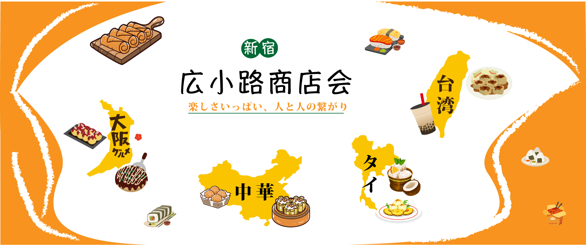
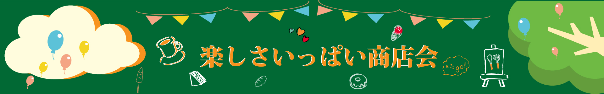

作品概要
目的
地域の人や観光客に商店街を知ってもらう。
ターゲット
地域の人や観光客
担当
企画・UIデザイン
制作期間
2週間
使用ツール
Illustrator
デザイン
オレンジと黄色を基調に、明るく活気のある雰囲気を表現しました。また、料理のイラストや地域のシルエットを組み合わせることで、視覚的に楽しめる構成にし、商店会のコンセプトである「楽しさいっぱい、人と人の繋がり」が伝わるよう工夫しました。
工夫した点
商店会の楽しさや多様な食文化が伝わるように、地域ごとの特徴的な料理のイラストを取り入れました。また、地域のシルエットと料理のイラストを組み合わせ、見る人が各地域の特色を直感的に理解できるよう工夫しました。
学んだこと
デザインを制作する際は、 見た目の美しさだけでなく、 伝えたい内容やコンセプトを視覚的に表現することが大切だと学びました。 また、色やイラスト、レイアウトの組み合わせによって、 見る人に与える印象が変わることを実感しました。 今後も、見る人にとって分かりやすく、興味を持ってもらえるデザインを目指していきたいです。